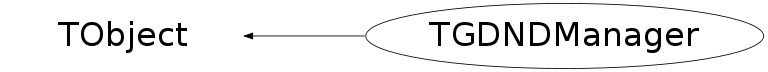

class TGDNDManager: public TObject
TGDNDManager Central Drag and Drop manager for ROOT.
Function Members (Methods)
public:
protected:
| virtual void | TObject::DoError(int level, const char* location, const char* fmt, va_list va) const |
| Window_t | FindWindow(Window_t root, Int_t x, Int_t y, Int_t maxd) |
| Window_t | GetRootProxy() |
| Bool_t | HandleDNDDrop(Window_t src, Time_t timestamp) |
| Bool_t | HandleDNDEnter(Window_t src, long vers, Atom_t* dataTypes) |
| Bool_t | HandleDNDFinished(Window_t target) |
| Bool_t | HandleDNDLeave(Window_t src) |
| Bool_t | HandleDNDPosition(Window_t src, int x_root, int y_root, Atom_t action, Time_t timestamp) |
| Bool_t | HandleDNDStatus(Window_t from, int accepted, Rectangle_t skip, Atom_t action) |
| void | InitAtoms() |
| Bool_t | IsDNDAware(Window_t win, Atom_t* typelist = 0) |
| Bool_t | IsTopLevel(Window_t win) |
| void | TObject::MakeZombie() |
| void | SendDNDDrop(Window_t target) |
| void | SendDNDEnter(Window_t target) |
| void | SendDNDFinished(Window_t src) |
| void | SendDNDLeave(Window_t target) |
| void | SendDNDPosition(Window_t target, int x, int y, Atom_t action, Time_t timestamp) |
| void | SendDNDStatus(Window_t target, Atom_t action) |
private:
| TGDNDManager(const TGDNDManager&) | |
| TGDNDManager& | operator=(const TGDNDManager&) |
Data Members
public:
| enum TObject::EStatusBits { | kCanDelete | |
| kMustCleanup | ||
| kObjInCanvas | ||
| kIsReferenced | ||
| kHasUUID | ||
| kCannotPick | ||
| kNoContextMenu | ||
| kInvalidObject | ||
| }; | ||
| enum TObject::[unnamed] { | kIsOnHeap | |
| kNotDeleted | ||
| kZombie | ||
| kBitMask | ||
| kSingleKey | ||
| kOverwrite | ||
| kWriteDelete | ||
| }; |
protected:
| Atom_t | fAcceptedAction | |
| Cursor_t | fDNDNoDropCursor | no drop cursor type |
| TGDragWindow* | fDragWin | drag window |
| Atom_t* | fDraggerTypes | lists of DND types |
| Bool_t | fDragging | kTRUE while dragging |
| Bool_t | fDropAccepted | kTRUE if drop accepted |
| TTimer* | fDropTimeout | drop timeout |
| Atom_t | fDropType | drop type |
| UInt_t | fGrabEventMask | pointer grab event mask |
| Int_t | fHotx | |
| Int_t | fHoty | hot point coordinates |
| Atom_t | fLocalAction | accepted and local actions |
| TGFrame* | fLocalSource | |
| TGFrame* | fLocalTarget | local source and target |
| TGFrame* | fMain | pointer on TGMainFrame |
| Pixmap_t | fMask | pixmap used for the drag window |
| Pixmap_t | fPic | |
| Bool_t | fProxyOurs | kTRUE if root proxy is ours |
| Window_t | fSource | |
| Bool_t | fStatusPending | kTRUE if status is pending |
| Window_t | fTarget | source and target windows |
| Bool_t | fTargetIsDNDAware | kTRUE if target is DND aware |
| Atom_t* | fTypelist | |
| Bool_t | fUseVersion | kTRUE if DND version is used |
| Atom_t | fVersion | not really an Atom, but a long |
| static Atom_t | fgDNDActionAsk | |
| static Atom_t | fgDNDActionCopy | |
| static Atom_t | fgDNDActionDescrip | |
| static Atom_t | fgDNDActionLink | |
| static Atom_t | fgDNDActionList | |
| static Atom_t | fgDNDActionMove | |
| static Atom_t | fgDNDActionPrivate | |
| static Atom_t | fgDNDAware | |
| static Atom_t | fgDNDDrop | |
| static Atom_t | fgDNDEnter | |
| static Atom_t | fgDNDFinished | |
| static Atom_t | fgDNDLeave | |
| static Atom_t | fgDNDPosition | |
| static Atom_t | fgDNDProxy | |
| static Atom_t | fgDNDSelection | |
| static Atom_t | fgDNDStatus | |
| static Atom_t | fgDNDTypeList | |
| static Atom_t | fgDNDVersion | |
| static Bool_t | fgInit | |
| static Atom_t | fgXAWMState | |
| static Atom_t | fgXCDNDData |
Class Charts
{kind=link}
{kind=link}
{kind=link}
{kind=link}

Function documentation
Window_t FindWindow(Window_t root, Int_t x, Int_t y, Int_t maxd)
Search for DND aware window at position x,y.
void SendDNDPosition(Window_t target, int x, int y, Atom_t action, Time_t timestamp)
Send DND position message to target window.
Bool_t HandleDNDPosition(Window_t src, int x_root, int y_root, Atom_t action, Time_t timestamp)
Handle DND position event.
Bool_t HandleDNDStatus(Window_t from, int accepted, Rectangle_t skip, Atom_t action)
Handle DND status event.
void SetDragPixmap(Pixmap_t pic, Pixmap_t mask, Int_t hot_x, Int_t hot_y)
Set drag window pixmaps and hotpoint.
Bool_t StartDrag(TGFrame* src, Int_t x_root, Int_t y_root, Window_t grabWin = kNone)
Start dragging.
TDNDData& operator=(const TGDNDManager& )
TGDNDManager(const TGDNDManager& )
Bool_t IsTopLevel(Window_t win)